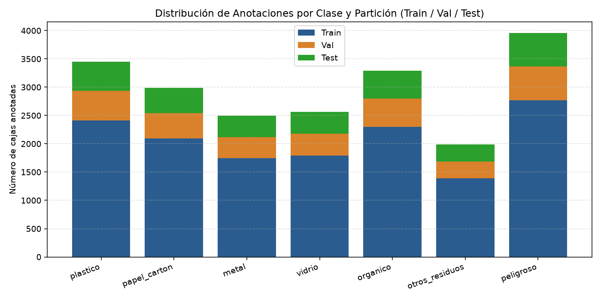
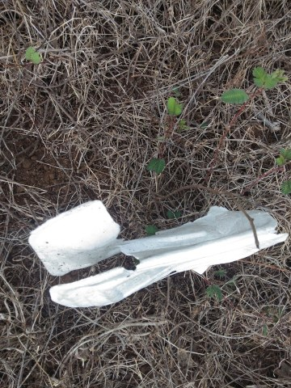

14,189Imágenes Válidas AuditadasTrain: 9,914 · Val: 2,102 · Test: 2,173
20,739Cajas Delimitadoras Reales0% cajas falsas de imagen completa
141 / 141Imágenes de Sonda ExcluidasBloqueo SHA-256 + dHash RGB/Gris
ed951fc07f63519cHash SHA-256 Global del CorpusDescargar dataset_manifest.json
1 · Fuentes de Datos Públicas y Propios Integrados (con URLs)
| Dataset / Fuente | Categorías NTP Aportadas | Imágenes | URL Oficial / Repositorio |
|---|---|---|---|
| 1. TACO Official | 7 clases en escenas reales | 1,251 | github.com/pedropro/TACO |
| 2. TACO Extended (Unofficial) | Peligroso, Negro, Vidrio, Metal | 1,230 | TACO Crowdsourced JSON |
| 3. HF Garbage Object Detection | Plástico, Papel, Metal, Vidrio, Orgánico | 3,630 | hf.co/datasets/keremberke/garbage-object-detection |
| 4. TrashNet (Stanford) | Plástico, Papel, Cartón, Metal, Vidrio, Trash | 2,162 | github.com/garythung/trashnet |
| 5. Garbage Classification 12C | Baterías, Biológico, Mascarillas, Textil, Calzado | 3,938 | kaggle.com/datasets/mostafaabla/garbage-classification |
| 6. Organic / Anorganic Waste | Orgánico (Marrón) en color y grises | 820 | kaggle.com/datasets/techsash/waste-classification-data |
| 7. Ultralytics Medical-Pills & Hazard | Blísteres farmacéuticos y jeringas reales | 156 | ultralytics/medical-pills · hf.co/chocochip119/hazard |
| 8. Colección Propia Ciro v3 (EPP + Tecnopor) | Mascarillas 3M/collages, guantes nitrilo, gasas (Rojo) y tecnopor (Negro) | 1,034 | Generado por src/ntp_data_curator.py |
2 · Distribución por Clase y Partición Estratificada (70 / 15 / 15)

3 · Muestras Representativas del Conjunto de Prueba Independiente

Blanco
Plásticos (PET, envases HDPE/PP)plastico
Blanco
Plásticos (PET, envases HDPE/PP)plastico
Azul
Papel y Cartónpapel_carton
Azul
Papel y Cartónpapel_carton
Amarillo
Metales (Latas, hojalata, aluminio)metal
Amarillo
Metales (Latas, hojalata, aluminio)metal
Gris
Vidrio (Botellas, frascos)vidrioGris
Vidrio (Botellas, frascos)vidrio
Marrón
Orgánicos (Restos de alimentos/vegetales)organico
Marrón
Orgánicos (Restos de alimentos/vegetales)organico
Negro
No Aprovechables (Tecnopor, envolturas, sanitarios)otros_residuos
Negro
No Aprovechables (Tecnopor, envolturas, sanitarios)otros_residuos
Rojo
Peligrosos (EPP clínico, pilas, aerosoles, fármacos)peligroso
Rojo
Peligrosos (EPP clínico, pilas, aerosoles, fármacos)peligroso